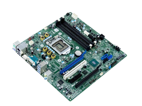

Płyta główna (Motherboard)
Opis: Płyta główna to centralna część komputera, do której podłączone są wszystkie inne komponenty. Umożliwia komunikację pomiędzy procesorem, pamięcią RAM, kartą graficzną i innymi urządzeniami. Jej kluczowe cechy to chipset, gniazdo procesora (socket), liczba slotów RAM oraz dostępne porty. Ma ogromny wpływ na możliwości rozbudowy komputera. Przykładowe modele to ASUS ROG Strix B550-F, MSI MAG B660 Tomahawk czy Gigabyte Z790 AORUS Elite.
